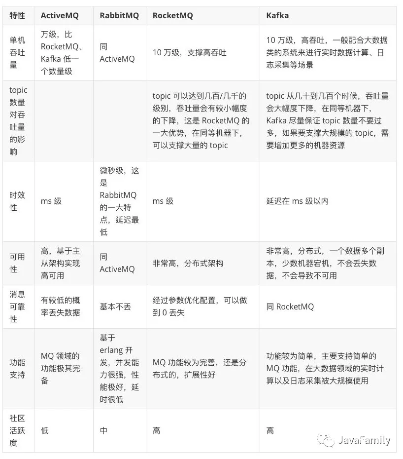
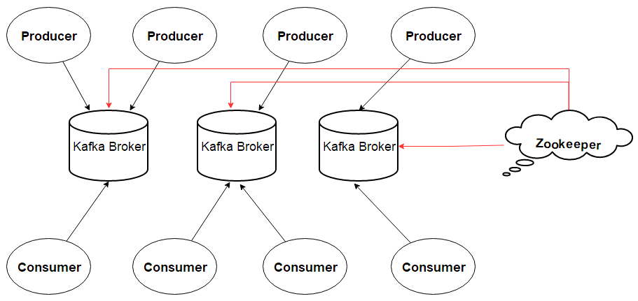
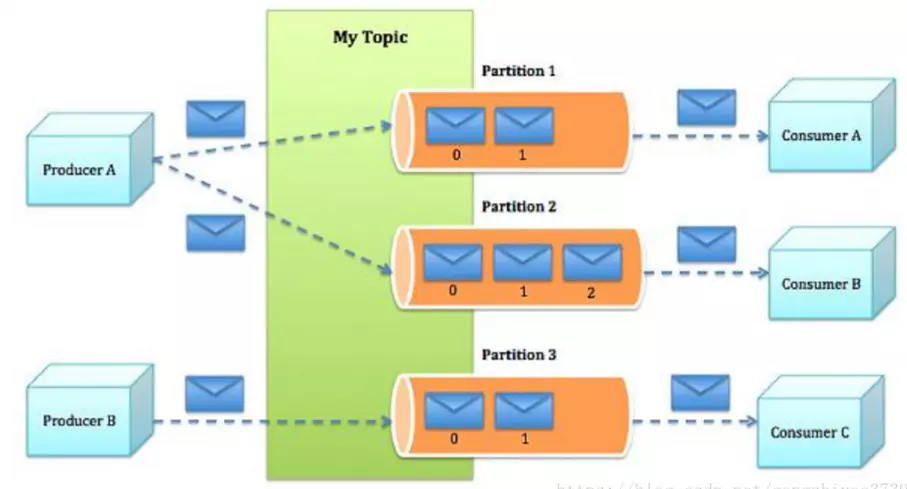

什么是消息队列
采取百度百科的定义：
“消息队列”是在消息的传输过程中保存消息的容器。
常见的消息队列有Kafka、ActiveMQ、RabbitMQ、RocketMQ。
关于消息队列，可以查看敖丙的消息队列基础
常见消息队列的对比，借用敖丙的图。

MQ的作用
- 异步
- 解耦
- 削峰
MQ问题
- 增加了系统复杂性，需要考虑重复消费，消息丢失，顺序消费的问题。
- 一致性问题，这不仅仅是MQ的问题，分布式系统都需要考虑这个问题。
- 可用性。
Kafka基础
网上找了一张Kafka的体系结构体图

- Broker: 一个单独的Kafka服务就是一个Broker。
- Zookeeper：为集群提供一致性服务。
下图是更详细的Kafka结构。

- Topic： 逻辑概念，对应消息队列中queue的概念，Kafka一个topic可以分布在多个broker里。
- Partition：物理概念，每个topic可以分成多个partition，每个partition就是一个append log文件。利用partition分布在不同broker的机制，kafka保证消息的高可用。
- Offset：每条消息在partition中的位置。Consumer基于offset实现顺序消费。
- Consumer Group（CG）：消费者组。每个Topic的Message可以被分发到不同的CG里面，但是每个CG里只有一个Consumer可以消费相应的Message。
Kafka特点：
- 拥有消息发布和订阅的功能;
- 能存储消息流，并具备容错性；
- 能够实时的处理数据流，使用Streams API，可以对输入的数据处理。
Kafka常见问题：
问：Kafka如何实现一条消息分发给多个消费者？
答：可以看到，Kafka基于消费者组实现一对多分发消息。要分发给不同的消费者，需要分到到不同的消费者组。
问：Kafka如何保证消息顺序？
答：Kafka将消息写入Partition，而单个Partition是有序的。如果需要保证全局有序，那只能有一个Partition。如果消费也得有顺序，那只能有一个消费者。
问：为什么会出现重复消费消息？
答：网络抖动，可能导致判断某条消息消费失败，导致重复消费。
问：Kafka如何提供一致性
答：基于Zookeeper服务
问：Kafka如何做到生产者发送越早的消息越早被添加到Topic中（如果有网络延迟呢）？
答：这里可以保证的是同一个生产者产生的消息，先发送的消息偏移量比后发送的小。当然，前提是发送的消息是同一主题，同一分区。
问：Kafka是如何备份，确保N-1失效还能不丢失数据？
创建主题的时候，可以通过--replication-factor参数指定partition备份数，备份的partition和leader partition位于不同的broker。写消息的时候，只有所有备份成功才返回成功。只要不是所有的broker失效，数据就不会丢失。
问：Kafka如何保证高效的记录消息日志？
答：Kafka只允许消息append log的方式追加日志，利用操作系统缓冲区，批量追加，避免了随机写磁盘，提高了IO效率。而且Kafka消息还支持压缩。
问：Kafka费时如何确保数据传输快熟。
传统的文件传输都是先将内容从内核空间拷贝到用户空间，再从用户空间拷贝的socket的内核空间。而sendfile函数支持从内核到内核拷贝，提升了IO效率。而且压缩方式传输也减少了网络开销。
问：Kafka如何删除消息，删除消息带来的影响？